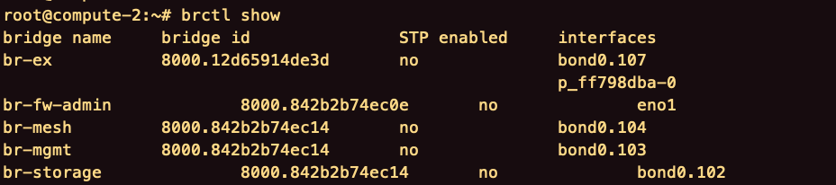
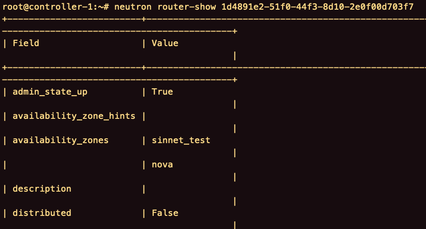
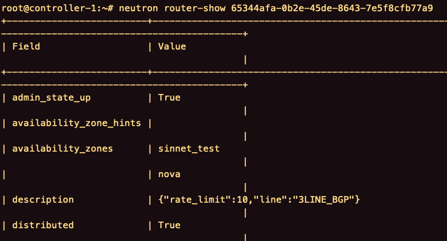
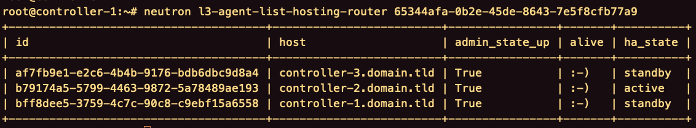
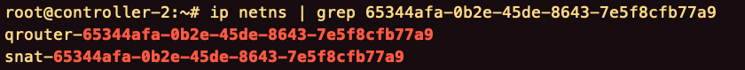
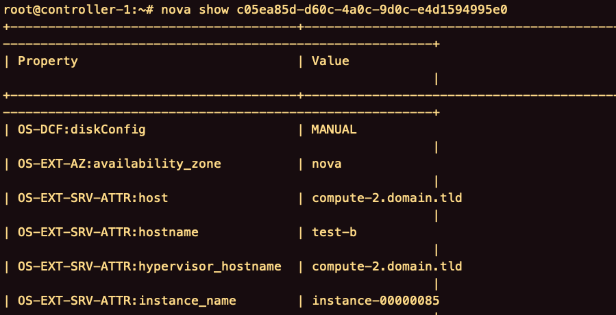
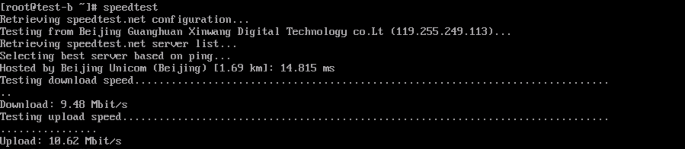

目录
- 部署
- 部署文档
- 安装neutron-vpn-agent
- 安装neutron-slancer
- 修改配置文件
- neutron.conf
- l3_agent.ini
- openvswitch_agent.ini
- ml2_conf.ini
- neutron-vpn-agent.conf
- neutron_slancer.conf
- slancer.filters
- 计算节点添加bridge
- 添加br-ex网桥
- 添加bond0.107子接口
- 添加p_ff798dba-0子接口
- 添加br-floating ovs网桥
- 添加br-manage ovs网桥
- 添加p_ff798dba-1子接口
- 启动子接口和网桥
- 重启服务
- neutron-server
- neutron-vpn-agent
- neutron-openvswitch-agent
- 部署脚本
- 执行
- setup_neutron_dvr.yml
- dvr_common.yml
- dvr.yml
- slancer.yml
- ifcfg-br-ex.j2
- ifcfg-interface.j2
- 测试
- 路由器创建测试
- 检查路由器的网络命名空间
- 控制节点
- 计算节点
- 端口转发测试
- 带宽限速测试
- 验证脚本
- verify.yml
- check_interface_command.yml
- check_service_command.yml
- 回退脚本
部署
部署文档
安装neutron-vpn-agent
计算节点安装neutron-vpn-agent。
1
| apt-get install neutron-vpn-agent
|
过程中会出现metadata-agent，当前项目不使用，略过。
安装neutron-slancer
安装neutron-slancer。
1
| pip install neutron-slancer==1.6.22 --no-deps -i http://pypi.oceanstack.slancer.com:6001/simple --trusted-host pypi.oceanstack.slancer.com --prefix /usr
|
修改配置文件
neutron.conf
所有节点（控制节点，网络节点，计算节点）的neutron.conf（/etc/neutron/neutron.conf）
l3_agent.ini
网络节点的l3_agent.ini（/etc/neutron/l3_agent.ini）
计算节点没有l3_agent.ini，可以将网络节点的l3_agent.ini复制过去，并修改。
openvswitch_agent.ini
网络节点和计算节点的openvswitch_agent.ini（/etc/neutron/plugins/ml2/openvswitch_agent.ini）
1
| enable_distributed_routing=true
|
计算节点的openvswitch_agent.ini，做如下修改。
1
| bridge_mappings = physnet1:br-floating,physnet2:br-manage
|
ml2_conf.ini
网络节点的ml2_conf.ini（/etc/neutron/plugins/ml2/ml2_conf.ini）
1
| mechanism_drivers =openvswitch,linuxbridge,l2population
|
计算节点的ml2_conf.ini。
1
| physical_network_mtus = physnet1:1500,physnet2:1500
|
neutron-vpn-agent.conf
将网络节点的neutron-vpn-agent.conf复制至计算节点。
1
| scp root@controller-1:/etc/init/neutron-vpn-agent.conf /etc/init/neutron-vpn-agent.conf
|
neutron_slancer.conf
将网络节点的neutron_slancer.conf复制至计算节点。
1
| scp root@controller-1:/etc/neutron/neutron_slancer.conf /etc/neutron/
|
slancer.filters
将控制节点的/etc/neutron/rootwrap.d/slancer.filters拷贝至计算节点。
1
| scp root@controller-1:/etc/neutron/rootwrap.d/slancer.filters /etc/neutron/rootwrap.d/
|
计算节点添加bridge
添加br-ex网桥
br-ex的配置文件ifcfg-br-ex（/etc/network/interfaces.d/ifcfg-br-ex）
1
2
3
| auto br-ex
iface br-ex inet manual
bridge_ports bond0.107 p_ff798dba-0
|
添加bond0.107子接口
首先查看当前计算节点的网桥。

br-mgmt为管理网络，子接口为bound0.104，br-ex需要和br-mgmt用同一网络设备。
bond0.107为br-ex上的子接口，计算节点不同，网络设备不同，这里的名字也要修改。
107是vxlan id。
bound0.107的配置文件ifcfg-bond0.107（/etc/network/interfaces.d/ifcfg-bond0.107）
1
2
3
| auto bond1.107
iface bond0.107 inet manual
vlan-raw-device bond0
|
添加p_ff798dba-0子接口
p_ff798dba-0的配置文件ifcfg-p_ff798dba-0（/etc/network/interfaces.d/ifcfg-p_ff798dba-0）
1
2
3
4
5
6
| auto p_ff798dba-0
allow-br-floating p_ff798dba-0
iface p_ff798dba-0 inet manual
ovs_type OVSIntPort
mtu 65000
ovs_bridge br-floating
|
添加br-floating ovs网桥
br-floating的配置文件ifcfg-br-floating（/etc/network/interfaces.d/ifcfg-br-floating）
1
2
3
4
5
| auto br-floating
allow-ovs br-floating
iface br-floating inet manual
ovs_type OVSBridge
ovs_ports p_ff798dba-0
|
添加br-manage ovs网桥
br-manage的配置文件ifcfg-br-manage（/etc/network/interfaces.d/ifcfg-manage）
1
2
3
4
5
| auto br-manage
allow-ovs br-manage
iface br-manage inet manual
ovs_type OVSBridge
ovs_ports p_ff798dba-1
|
添加p_ff798dba-1子接口
p_ff798dba-1的配置文件ifcfg-p_ff798dba-1（/etc/network/interfaces.d/ifcfg-p_ff798dba-1）
1
2
3
4
5
6
| auto p_ff798dba-1
allow-br-floating p_ff798dba-1
iface p_ff798dba-1 inet manual
ovs_type OVSIntPort
mtu 65000
ovs_bridge br-manage
|
启动子接口和网桥
1
2
3
4
5
6
| ifup bond1.107
ifup p_ff798dba-0
ifup p_ff798dba-1
ifup br-ex
ifup br-floating
ifup br-manage
|
重启服务
neutron-server
控制节点重启neutron-server。
1
| service neutron-server restart
|
neutron-vpn-agent
网络节点，计算节点重启neutron-vpn-agent。
1
| service neutron-vpn-agent restart
|
neutron-openvswitch-agent
计算节点重启neutron-openvswitch-agent。
1
| service neutron-openvswitch-agent restart
|
部署脚本
执行
1
| ansible-playbook -i inventory/cloude_nodes update_neutron_dvr.yml
|
setup_neutron_dvr.yml
1
2
3
4
5
6
7
8
9
10
| ---
- name: Setup Neutron DVR
hosts:
- node
vars_files:
- vars/dvr_common.yml
vars:
action: dvr
roles:
- role: neutron
|
dvr_common.yml
1
2
3
4
5
6
7
8
9
10
11
12
13
14
15
16
17
18
19
20
21
22
23
24
25
26
27
28
29
30
31
32
33
34
35
36
37
38
39
40
41
42
43
| ocean_version: '1.6.24'
index_url: 'http://pypi.oceanstack.slancer.com:6001/simple'
trusted_host: 'pypi.oceanstack.slancer.com'
extra_args: '-i {{ index_url }} --trusted-host {{ trusted_host }}'
extra_args_no_deps: '{{ extra_args }} --no-deps'
extra_args_cloud: '{{ extra_args_no_deps }} --prefix=/usr'
interface_dir: '/etc/network/interfaces.d'
cluster_interface_dir: '/home/lancer/cluster-master/services/network/etc/network/interfaces.d'
port: '.107'
neutron:
section: 'DEFAULT'
dvr_option: 'router_distributed'
value: 'true'
l3:
section: 'DEFAULT'
agent_mode_option: 'agent_mode'
agent_mode_snat: 'dvr_snat'
agent_mode_dvr: 'dvr'
ovs:
enable_dvr_section: 'agent'
enable_dvr_option: 'enable_distributed_routing'
value: 'true'
bridge_mapping_section: 'ovs'
bridge_mapping_option: 'bridge_mappings'
bridge_mapping_value: 'physnet1:br-floating,physnet2:br-manage'
ml2:
section: 'ml2'
drivers_option: 'mechanism_drivers'
drivers_value: 'openvswitch,linuxbridge,l2population'
physical_network_mtus_option: 'physical_network_mtus'
physical_network_mtus_value: 'physnet1:1500,physnet2:1500'
oceanstack:
master:
services: '/home/lancer/cluster-master/services'
|
dvr.yml
1
2
3
4
5
6
7
8
9
10
11
12
13
14
15
16
17
18
19
20
21
22
23
24
25
26
27
28
29
30
31
32
33
34
35
36
37
38
39
40
41
42
43
44
45
46
47
48
49
50
51
52
53
54
55
56
57
58
59
60
61
62
63
64
65
66
67
68
69
70
71
72
73
74
75
76
77
78
79
80
81
82
83
84
85
86
87
88
89
90
91
92
93
94
95
96
97
98
99
100
101
102
103
104
105
106
107
108
109
110
111
112
113
114
115
116
117
118
119
120
121
122
123
124
125
126
127
128
129
130
131
132
133
134
135
136
137
138
139
140
141
142
143
144
145
146
147
148
149
150
151
152
153
154
155
156
157
158
159
160
161
162
163
164
165
166
167
168
169
170
171
172
173
174
175
176
177
178
179
180
181
182
183
184
185
186
187
| ---
- name: compute install neutron-vpn-agent
when: inventory_hostname in groups['compute']
apt:
name: neutron-vpn-agent
state: present
- name: backup neutron.conf
raw: 'cd /etc/neutron;tar -cvf neutron.tar /etc/neutron'
- name: update neutron.conf
ini_file:
dest: /etc/neutron/neutron.conf
section: '{{ neutron.section }}'
option: '{{ neutron.dvr_option }}'
value: '{{ neutron.value }}'
- name: network update l3_agent.ini
when: inventory_hostname in groups['network']
lineinfile:
dest: /etc/neutron/l3_agent.ini
regexp: '^[l3]'
state: absent
- name: network update l3_agent.ini
when: inventory_hostname in groups['network']
lineinfile:
dest: /etc/neutron/l3_agent.ini
regexp: '^agent_mode = dvr_snat'
state: absent
- name: network update l3_agent.ini
when: inventory_hostname in groups['network']
ini_file:
dest: /etc/neutron/l3_agent.ini
section: '{{ l3.section }}'
option: '{{ l3.agent_mode_option }}'
value: '{{ l3.agent_mode_snat }}'
- name: network update openvswitch_agent.ini
when: inventory_hostname in groups['network']
ini_file:
dest: /etc/neutron/plugins/ml2/openvswitch_agent.ini
section: '{{ ovs.enable_dvr_section }}'
option: '{{ ovs.enable_dvr_option }}'
value: '{{ ovs.value }}'
- name: network update ml2_conf.ini
when: inventory_hostname in groups['network']
ini_file:
dest: /etc/neutron/plugins/ml2/ml2_conf.ini
section: '{{ ml2.section }}'
option: '{{ ml2.drivers_option }}'
value: 'openvswitch,linuxbridge,l2population'
- name: copy l3_agent.ini to compute
when: inventory_hostname in groups['compute']
copy:
src: 'l3_agent.ini'
dest: '/etc/neutron'
- name: compute update l3_agent.ini
when: inventory_hostname in groups['compute']
lineinfile:
dest: /etc/neutron/l3_agent.ini
regexp: '^[l3]'
state: absent
- name: compute update l3_agent.ini
when: inventory_hostname in groups['compute']
lineinfile:
dest: /etc/neutron/l3_agent.ini
regexp: '^agent_mode = dvr'
state: absent
- name: compute update l3_agent.ini
when: inventory_hostname in groups['compute']
ini_file:
dest: /etc/neutron/l3_agent.ini
section: '{{ l3.section }}'
option: '{{ l3.agent_mode_option }}'
value: '{{ l3.agent_mode_dvr }}'
- name: compute update openvswitch_agent.ini
when: inventory_hostname in groups['compute']
ini_file:
dest: /etc/neutron/plugins/ml2/openvswitch_agent.ini
section: '{{ ovs.enable_dvr_section }}'
option: '{{ ovs.enable_dvr_option }}'
value: '{{ ovs.value }}'
- name: compute update openvswitch_agent.ini
when: inventory_hostname in groups['compute']
ini_file:
dest: /etc/neutron/plugins/ml2/openvswitch_agent.ini
section: '{{ ovs.bridge_mapping_section }}'
option: '{{ ovs.bridge_mapping_option }}'
value: '{{ ovs.bridge_mapping_value }}'
- name: compute update ml2_conf.ini
when: inventory_hostname in groups['compute']
ini_file:
dest: /etc/neutron/plugins/ml2/ml2_conf.ini
section: '{{ ml2.section }}'
option: '{{ ml2.physical_network_mtus_option }}'
value: '{{ ml2.physical_network_mtus_value }}'
- include: slancer.yml
- name: compute backup interfaces.d
when: inventory_hostname in groups['compute']
raw: 'cd /etc/network;tar -cvf interfaces.d.tar interfaces.d'
- name: copy ifcfg-br-floating to compute
when: inventory_hostname in groups['compute']
copy:
src: '{{ cluster_interface_dir }}/ifcfg-br-floating'
dest: '{{ interface_dir }}'
- name: copy ifcfg-p_ff798dba-0 to compute
when: inventory_hostname in groups['compute']
copy:
src: '{{ cluster_interface_dir }}/ifcfg-p_ff798dba-0'
dest: '{{ interface_dir }}'
- name: copy ifcfg-p_ff798dba-1 to compute
when: inventory_hostname in groups['compute']
copy:
src: '{{cluster_interface_dir}}/ifcfg-p_ff798dba-1'
dest: '{{interface_dir}}'
- name: copy ifcfg-br-manage to compute
when: inventory_hostname in groups['compute']
copy:
src: '{{cluster_interface_dir}}/ifcfg-br-manage'
dest: '{{interface_dir}}'
- name: create ifcfg-br-ex to compute
when: inventory_hostname in groups['compute']
template:
src: 'ifcfg-br-ex.j2'
dest: '{{interface_dir}}/ifcfg-br-ex'
- name: create ifcfg-interface to compute
when: inventory_hostname in groups['compute']
template:
src: 'ifcfg-interface.j2'
dest: '{{interface_dir}}/ifcfg-{{interface}}{{port}}'
- name: compute setup interface
when: inventory_hostname in groups['compute']
raw: 'ifup {{interface}}{{port}};ifup p_ff798dba-0; ifup br-ex; ifup br-floating; ifup br-manage'
- name: compute setup interface
when: inventory_hostname in groups['compute']
raw: 'ifup p_ff798dba-1'
- name: copy neutron-vpn-agent.conf to compute
when: inventory_hostname in groups['compute']
copy:
src: 'neutron-vpn-agent.conf'
dest: '/etc/init/'
- name: compute neutron-vpn-agent restart
when: inventory_hostname in groups['compute']
service:
name: neutron-vpn-agent
state: restarted
- name: compute neutron-openvswitch-agent restart
when: inventory_hostname in groups['compute']
service:
name: neutron-openvswitch-agent
state: restarted
- name: network neutron-vpn-agent restart
when: inventory_hostname in groups['network']
service:
name: neutron-vpn-agent
state: restarted
- name: controller neutron-server restart
when: inventory_hostname in groups['controller']
service:
name: neutron-server
state: restarted
|
slancer.yml
1
2
3
4
5
6
7
8
9
10
11
12
13
14
15
16
17
18
19
20
21
| ---
- name: install neutron slancer plugins
pip:
name: neutron-slancer
version: '{{ ocean_version }}'
extra_args: '{{ extra_args_cloud }}'
- name: post policy
copy:
src: '{{oceanstack.master.services}}/neutron/etc/neutron/policy.json'
dest: /etc/neutron/policy.json
- name: post rootwrap
copy:
src: '{{oceanstack.master.services}}/neutron/etc/neutron/rootwrap.d/slancer.filters'
dest: /etc/neutron/rootwrap.d/slancer.filters
- name: post config file
copy:
src: '{{oceanstack.master.services}}/neutron/etc/neutron/neutron_slancer.conf'
dest: /etc/neutron/neutron_slancer.conf
|
ifcfg-br-ex.j2
1
2
3
| auto br-ex
iface br-ex inet manual
bridge_ports {{ interface }}{{port}} p_ff798dba-0
|
ifcfg-interface.j2
1
2
3
| auto {{ interface }}{{port}}
iface {{ interface }}{{port}} inet manual
vlan-raw-device {{ interface }}
|
测试
路由器创建测试
在界面创建路由器，进入控制节点查看路由器的详细信息。
1
| neutron router-show [router-id]
|


distributed的值为True，说明路由器为分布式。
检查路由器的网络命名空间
控制节点
查看当前路由器所在的控制节点。
1
| neutron l3-agent-list-hosting-router [router-id]
|

进入相应的控制节点，并查看是否有路由器的网络命名空间。
1
| ip netns | grep [router-id]
|

snat-xxx的网络命名空间包含端口转发的详细规则。
计算节点
找到虚拟机位于的计算节点。

进入计算节点，并查看路由器的网络命名空间。
1
| ip netns | grep [router-id]
|
当且仅当计算节点有qrouter-xxx的网络命名空间时，可以判定DVR部署成功。
端口转发测试
在虚拟机内部创建一个服务，如Apache服务。
可以利用curl命令访问本机的80端口。
还可以利用netstat命令查看Apache服务占用的端口。
1
| netstat -anp | grep httpd
|
通过界面，在路由器上面添加端口转发规则。
通过界面，在安全组开放对端口的访问。
最后，利用浏览器测试端口转发。
带宽限速测试
虚拟机安装speedtest-cli，可以对公网IP和路由器带宽进行测速。

验证脚本
verify.yml
1
2
3
4
5
6
7
8
9
10
11
12
13
14
15
16
17
18
19
20
21
22
23
| ---
- name: verify
include: check_interface_command.yml command='ip a show {{item}}'
with_items:
- br-ex
- br-floating
- '{{interface}}{{port}}'
- br-manage
- p_ff798dba-0
- p_ff798dba-1
when: inventory_hostname in groups['compute']
- name: compute check neutron-vpn-agent
include: check_service_command.yml command='service neutron-vpn-agent status'
when: inventory_hostname in groups['compute']
- name: network check neutron-vpn-agent
include: check_service_command.yml command='service neutron-vpn-agent status'
when: inventory_hostname in groups['network']
- name: controller check neutron-server
include: check_service_command.yml command='service neutron-server status'
when: inventory_hostname in groups['controller']
|
check_interface_command.yml
1
2
3
4
5
6
7
8
9
| ---
- name: check interface
shell: '{{ command }}'
register: result
- name: check result
fail:
msg: '{{result}}'
when: '"DOWN" in result.stdout'
|
check_service_command.yml
1
2
3
4
5
6
7
8
9
| ---
- name: check service
shell: '{{ command }}'
register: result
- name: check result
fail:
msg: '{{result}}'
when: '"running" not in result.stdout'
|
回退脚本
1
2
3
4
5
6
7
8
9
10
11
12
13
14
15
16
17
18
19
20
21
22
23
24
25
26
27
28
29
30
31
32
33
34
35
36
37
38
39
40
41
42
43
44
45
46
47
48
49
50
51
52
53
54
55
56
57
58
59
60
61
| ---
- name: compute stop neutron-vpn-agent
when: inventory_hostname in groups['compute']
service:
name: neutron-vpn-agent
state: stopped
- name: update neutron.conf
ini_file:
dest: /etc/neutron/neutron.conf
section: '{{ neutron.section }}'
option: '{{ neutron.dvr_option }}'
value: 'false'
- name: network update l3_agent.ini
when: inventory_hostname in groups['network']
ini_file:
dest: /etc/neutron/l3_agent.ini
section: '{{ l3.section }}'
option: '{{ l3.agent_mode_option }}'
value: 'legacy'
- name: network update openvswitch_agent.ini
when: inventory_hostname in groups['network']
ini_file:
dest: /etc/neutron/plugins/ml2/openvswitch_agent.ini
section: '{{ ovs.enable_dvr_section }}'
option: '{{ ovs.enable_dvr_option }}'
value: 'false'
- name: network update openvswitch_agent.ini
when: inventory_hostname in groups['compute']
ini_file:
dest: /etc/neutron/plugins/ml2/openvswitch_agent.ini
section: '{{ ovs.enable_dvr_section }}'
option: '{{ ovs.enable_dvr_option }}'
value: 'false'
- name: network restart neutron-openvswitch-agent
when: inventory_hostname in groups['network']
service:
name: neutron-openvswitch-agent
state: restarted
- name: network restart neutron-vpn-agent
when: inventory_hostname in groups['network']
service:
name: neutron-vpn-agent
state: restarted
- name: controller restart neutron-server
when: inventory_hostname in groups['controller']
service:
name: neutron-server
state: restarted
- name: compute restart neutron-openvswitch-agent
when: inventory_hostname in groups['compute']
service:
name: neutron-openvswitch-agent
state: restarted
|